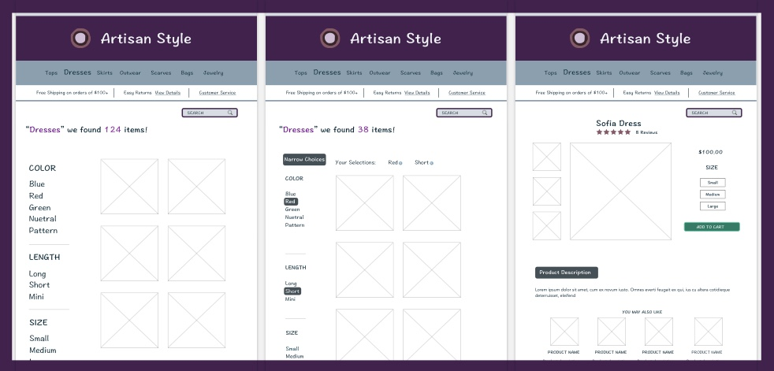
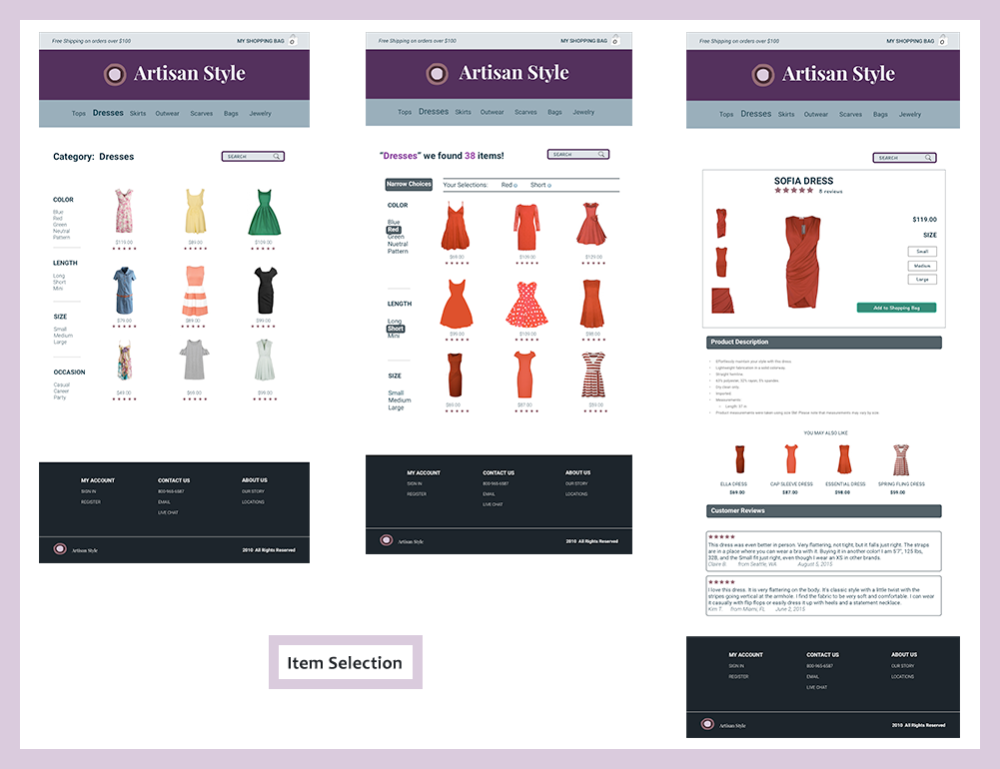
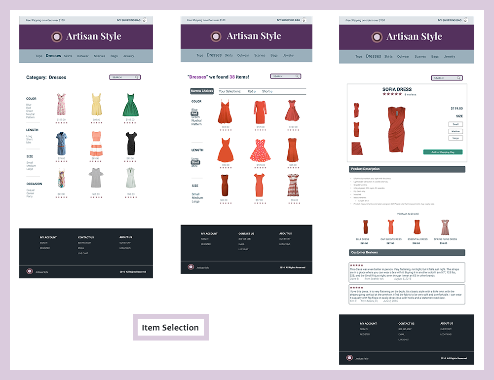

3Illustrator / Balsamiq / InVision / Peek User Testing / Sketch
INITIAL STEPS Map out key functionality: WIREFRAMES AND CLICK STREAM Converting rough sketches to low fidelity wireframes crystalized the layout. I experimented with creating low fidelity wireframes in Sketch, thinking that the conversion to hi-fidelity would be sped up. It slowed down the initial layout part of the design process and created this hybrid low/hi fidelity output. Once I created the prototype with InVision utilizing these part low-/hi-fidelity wireframes, I started getting user experience feedback, via Peek User Testing. The testers were confused. They didn't know how to intrept low-fidelity that ultimately just looked like an incomplete final product. FINAL CONTENT


* shopping experience focusing on ease of selecting items to be considered
* the checkout process
Define color palette and font choices.
Design Home Page
Define site navigation


So, I quickly transformed low-fidelity to hi-fidelity wireframes and began the user testing with a prototype that was in final state format."...one of the easiest checkout processes I've ever used!"

 


completed with guidance from product designer Morgan Carter (morgancarter.com.au).